HTML и CSS инструментите позволяват инспектирането и редактирането на CSS елементи в уеб страница.
По-късни версии на Firebug позволяват на потребителите да наблюдават на живо промените в CSS-са. Визуализацията на CSS елементи се показва, докато се инспектират HTML елементите. Firebug layout таба се използва, за да се показват и манипулират стойностите на CSS пропъртитата(свойствата). Още повече, потребителите може да кликват върху всеки видим HTML елемент на страницата и по този начин да достъпят CSS-са.
http://getfirebug.com/css
http://getfirebug.com/dom
Firebug CSS табовете казват всичко, което дивелъпъра има нужда да знае за стиловете на уеб страницата, и ако той не харесва това, което вижда - може да ги промени.
Инспектиране на йерархията
Без Firebug, дивелъпъра е оставен да се бори с елементи, които се появяват сини, когато се очаква да са черни. С Firebug дивелъпъра може да инспектира проблемния елемент и изключително бързо да разбере причината за проблема.
Firebug показва правилата, които са в йерархия и стилизират всеки елемент. Правилата са сортирани в ред на предимство и пропъртитата, които се презаписват, са зачертани с линия по средата. Всяко правило има линк обратно към файла, където е дефинирано, от където дивелъпъра може с един клик да отвори файла.
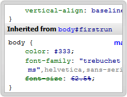
Преглед на цветове, картинки и шрифтове
Докато потребителя мърда мишката над цветове, шрифтове, градиенти или линкове към картинки в рамките на CSS таба, удобен туултип се появява, показващ стойността и носещ повече информация и детайли. Например туултипа за картинки показва размерите на оригиналната картинка, което може да спести много време на потребителя, особено, когато трябва да се напише CSS, за да се направи елемент да фитва точно размерите на картинка. Туултипа за шрифтове показва примерен текст с този шрифт и т.н.
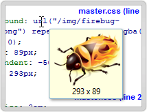
Tweak tweak tweak
Редактирането на CSS никога не е било по-лесно. Едно кликване е нужно върху CSS пропърти, за да се появи инпут поле. Докато потребителят пише, промените са отразяват незабавно. Firebug аутокъмплийтва от списък с възможни стойност в същото време, докато потребителят редактира. За да не се запазят направените промени, може да използва Esc бутона. За да се отиде от едно пропърти на следващо, се използва таба.
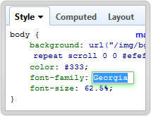
Малко повече, малко по-малко
Аутокъмплийта спестява много време най-вече при писане на думи, но какво да кажем за случая, когато пишем числа? Ако потребителя се опитва да подравни нещо перфектно, просто може да използва стрелките нагоре и надолу, докато редактира число. Firebug инкрементира или декрементира числото със стъпка 1. С Shift+Up/Down и Ctrl+Up/Down се инкрементира/декрементира със стъпка 10, респективно с 0.1
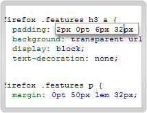
Учене се по време на писане
Ако потребителят все още учи CSS, Firebug е прекрасен инструмент за научаване на спропъртитата. Докато редактира CSS пропърти, потребителят може да използва стрелките нагоре и надолу, за да мине през всички възможни пропъртита в азбучен ред. Firebug е снабден с целия речник от стандартни CSS ключове, както и с някои специфични за Mozilla добавки.
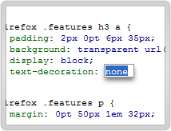
Има го, няма го
Много често решението на даден проблем може да бъде намерено чрез изключване на няколко CSS пропъртита и наблюдаване какво се случва без тях. Ако потребителят мине с мишката през всяко пропърти, той ще види малка кръгла иконка в ляво. При натискането й, той изключва това пропътри, а при натискането й отново - го включва отново.
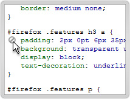
Инспектиране на цял CSS файл
Докато HTML таба позволява инспектирането на CSS-а на един елемент, главният CSS таб позволява да се види целия CSS файл. Ако потребителят кликне на листа с файлове в туулбара, той ще види удобен смисък на всички CSS файлове, импортирани в уеб страницата.
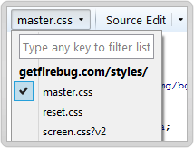
Копиране на цветове и адреси на картинки
За много от дивелъпърите копи и пейст е сърцето на уеб разработката. Firebug прави лесно копирането на две от най-важните пропъртита на елемент - цветове и url-и на картинки. С десен клик се появява контекстно меню с възможност за копиране.
Когато се копира адрес на картинка, Firebug копира абсолютния път до картинкта, въпреки че CSS-а показва релативния.
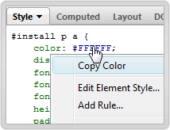
Отваряне на външен редактор
Отделни CSS файлове, показани от Firebug, могат да бъдат отворе от външни редактори или IDE-та. Firebug позволява също подходяшо да се конфигурират аргументи като номер на ред, адрес и т.н.
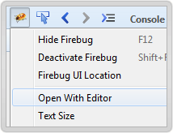
Калкулирани стилове
Firebug предлага панел, който показва всички CSS стилови стойности калкулирани от юзер агента, докато интерпретира дадена CSS информация за селектирания елемент в HTML панела. Иначе казано - показва реалната визуализирана стойност.
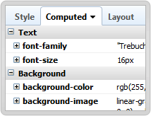
Показване на грешки в хода на редактиране на CSS свойства
,
Инлайн редактора, който се използва за редактиране на CSS свойства и техните стойности индикира дали инпута е коректен. Това става чрез промяна на цвета на стойността. Ако той е червен, значи не е коретно, ако е зелен - коректно.
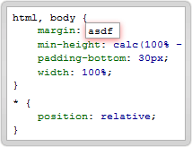
CSS псевдо класове
Firebug позволява да се инспектира код, който използва псевдо класове като :hover, :active и :focus. Потребителят може да "заключи" селектиран елемент в даден стейт и по този начин мърдания на мишката не го променят.
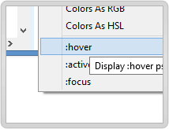
Редактиране на сорс кода или само "на живо"
През повечето време Firebug показва обектите директно от браузъра. Въпреки че редактирането във Firebug е "на живо", то не променя сорс кода. За щастие CSS панела също така поддържа редактира на сорс кода. В този случай потребителят редактира директно кода на заредения файл.
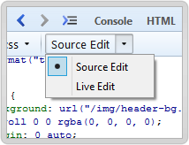